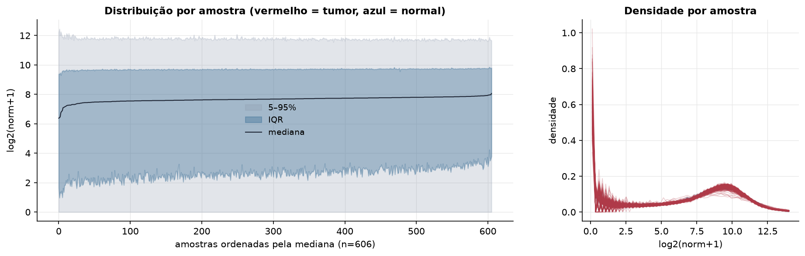
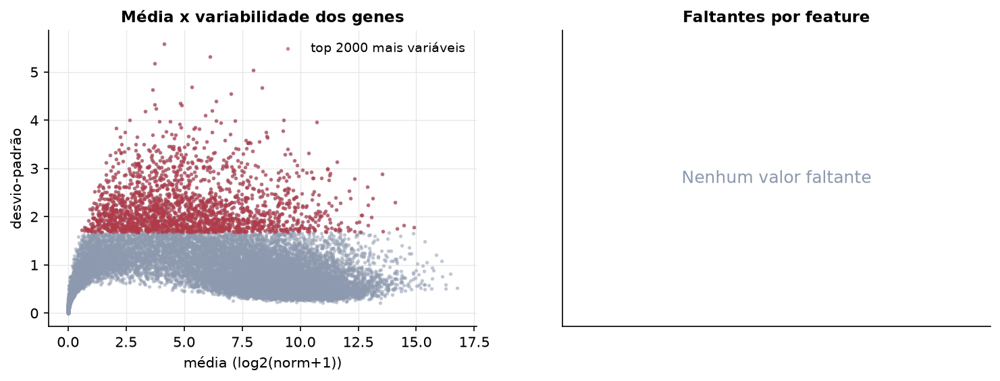
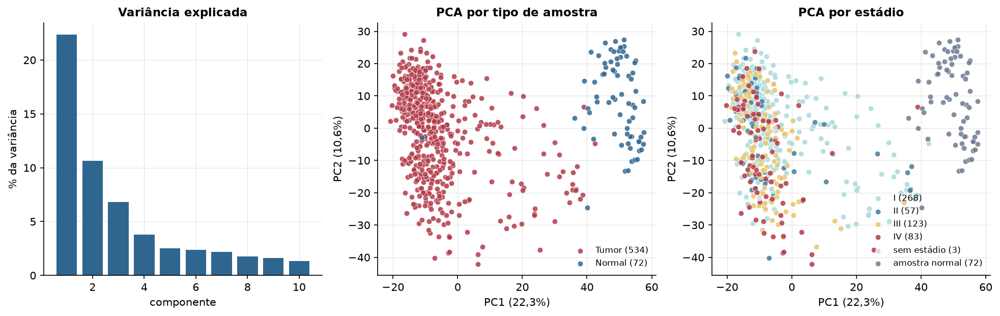
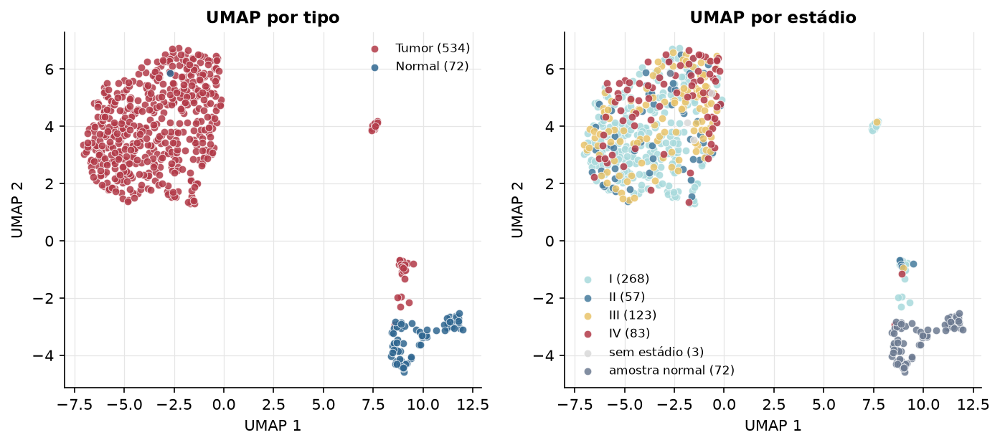
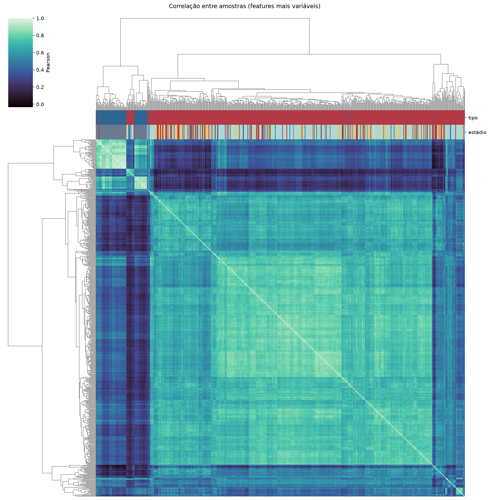
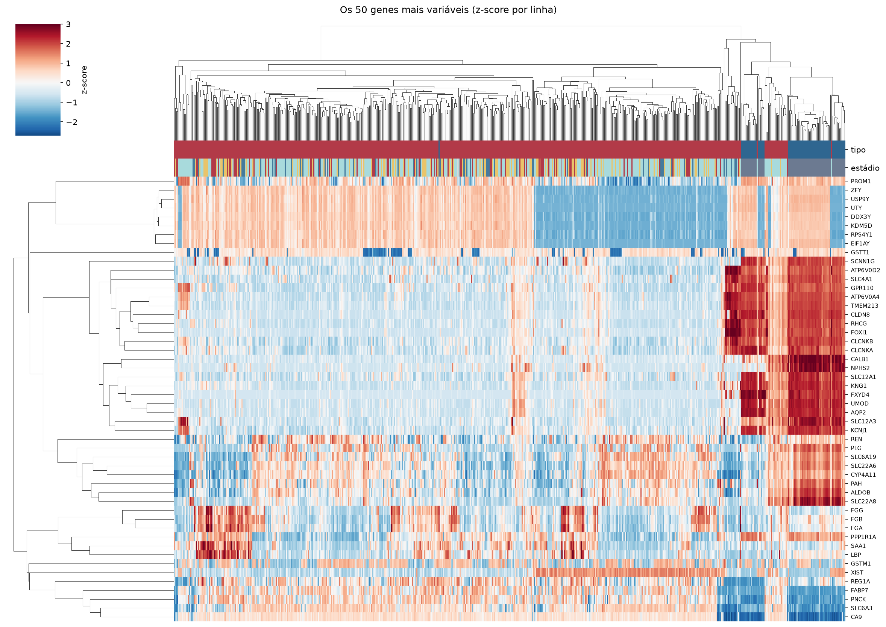
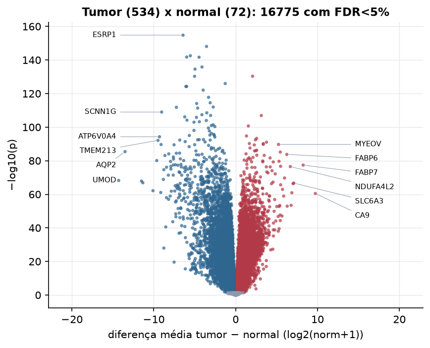
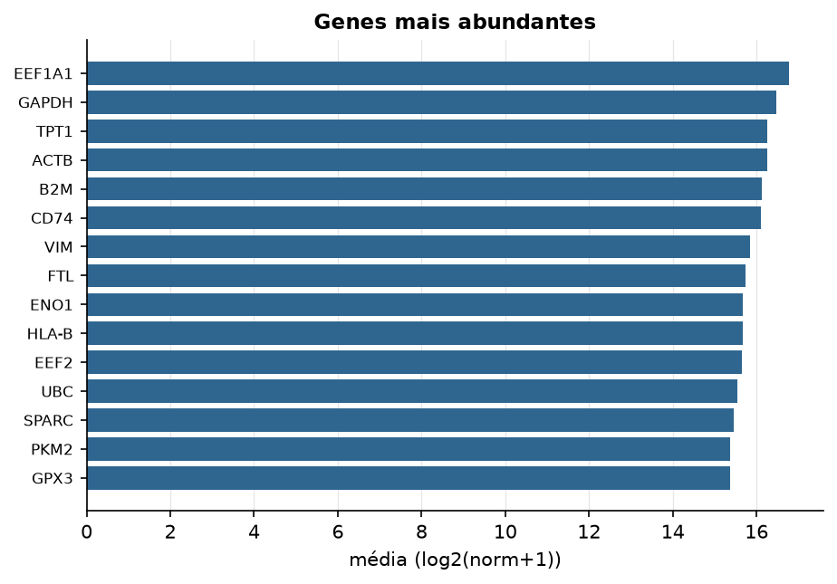

KIRC · RNA-seq (PanCanAtlas)
Illumina HiSeq, RSEM normalizado e corrigido por lote (EB++), log2(x+1) · gerado em 21/10/2026 22:27
20.531genes
534amostras tumorais
72amostras normais
0,0%valores faltantes
Fonte: PanCanAtlas EB++ via API do Xena
Estes valores já vêm normalizados e com correção de lote entre plataformas e centros. Servem bem para modelos gaussianos ou redes neurais; para um modelo de contagem use as contagens brutas do GDC.
Principais resultados
- 20.531 genes medidos em 606 amostras (534 tumorais e 72 normais); 0,0% dos valores estão faltando.
- Os dois primeiros componentes principais explicam 22,3% e 10,6% da variância das features mais variáveis.
- Correlação mediana entre amostras: 0,64.
- Amostras com correlação muito abaixo das demais (possíveis outliers técnicos): TCGA-A3-3328-01, TCGA-AK-3443-01.
- Tumor x normal: 16775 genes diferentes com FDR < 5% (8796 maiores no tumor, 7979 maiores no normal; 72 pacientes têm o par tumor-normal).
- Mais aumentados no tumor: EFCAB3, HTRA4, LOC221122, FOXJ3, KRBA1, ZNF395, RAB42, OPN4.
- Mais reduzidos no tumor: ESRP1, ALDH1A2, DNER, TFCP2L1, ANKRD43, ANO5, SCNN1A, CHL1.
- Associações clínicas com p < 0,05 nos componentes principais: PC1 com estádio (p=0.005); PC2 com estádio (p=1.4e-15); PC3 com estádio (p=2.4e-08); PC1 com sexo (p=0.00021); PC2 com sexo (p=8.7e-07); PC3 com idade (p=0.0059).
- Em mediana, 81,5% dos genes têm expressão acima de log2(norm+1)=1 em cada amostra.
Distribuição dos valores


Estrutura das amostras




Tumor x normal

Features mais diferentes entre tumor e normal
| diferenca_tumor_menos_normal | t | p | fdr | |
|---|---|---|---|---|
| ESRP1 | -6.43 | -43.24 | 1.56e-155 | 3.15e-151 |
| ALDH1A2 | -3.563 | -35.838 | 8.66e-149 | 8.77e-145 |
| DNER | -5.537 | -39.934 | 2.87e-143 | 1.93e-139 |
| TFCP2L1 | -5.987 | -44.813 | 1.76e-142 | 8.9e-139 |
| ANKRD43 | -4.479 | -38.409 | 2.24e-142 | 9.07e-139 |
| ANO5 | -4.116 | -34.476 | 1.42e-136 | 4.81e-133 |
| SCNN1A | -4.967 | -41.531 | 2.77e-135 | 8.02e-132 |
| EFCAB3 | 2.06 | 33.596 | 4.59e-131 | 1.16e-127 |
| CHL1 | -5.02 | -43.617 | 5.15e-131 | 1.16e-127 |
| BRCC3 | -1.277 | -39.352 | 1e-126 | 2.03e-123 |
| CWH43 | -5.99 | -41.269 | 5.36e-125 | 9.86e-122 |
| FAM3B | -6.081 | -49.691 | 6.05e-125 | 1.02e-121 |
| TFAP2A | -3.973 | -34.218 | 8.33e-123 | 1.3e-119 |
| AP1M2 | -3.312 | -35.813 | 1.75e-118 | 2.53e-115 |
| NAP1L2 | -3.116 | -32.373 | 3.06e-115 | 4.13e-112 |
| PAK6 | -4.767 | -44.703 | 8.39e-115 | 1.06e-111 |
| CORO2B | -2.741 | -33.209 | 1.02e-112 | 1.21e-109 |
| SERPINA5 | -7.239 | -45.216 | 1.5e-112 | 1.69e-109 |
| CNTN3 | -4.641 | -34.128 | 4.38e-112 | 4.66e-109 |
| SCNN1G | -9.037 | -47.586 | 9.95e-110 | 1.01e-106 |
| PCDHA12 | -3.526 | -32.381 | 2.92e-109 | 2.82e-106 |
| ESRRG | -4.12 | -35.779 | 3.89e-108 | 3.58e-105 |
| COL4A5 | -3.062 | -34.186 | 1.1e-107 | 9.68e-105 |
| HTRA4 | 3.127 | 32.299 | 1.18e-107 | 9.98e-105 |
| PROM2 | -6.224 | -41.331 | 7.36e-107 | 5.96e-104 |
| MAP3K15 | -4.791 | -37.91 | 1.47e-106 | 1.15e-103 |
| OVCH2 | -5.948 | -54.959 | 6.81e-105 | 5.11e-102 |
| RBM11 | -3.59 | -34.805 | 1.07e-104 | 7.72e-102 |
| C1orf168 | -4.435 | -35.395 | 5.99e-104 | 4.18e-101 |
| MAL | -5.092 | -34.695 | 1.06e-103 | 7.14e-101 |
Associação com variáveis clínicas
p-valores da associação dos três primeiros componentes principais (só tumores) com estádio (Kruskal-Wallis), sexo (Mann-Whitney), idade (Spearman) e sobrevida global (Cox univariado).
| estádio (Kruskal) | sexo (Mann-Whitney) | idade (Spearman) | sobrevida OS (Cox) | |
|---|---|---|---|---|
| PC1 (14,4%) | 0.005 | 0.000208 | 0.246 | 1.17e-05 |
| PC2 (9,7%) | 1.39e-15 | 8.68e-07 | 0.81 | 2.3e-10 |
| PC3 (4,8%) | 2.45e-08 | 0.301 | 0.006 | 0.000842 |
Mais abundantes
